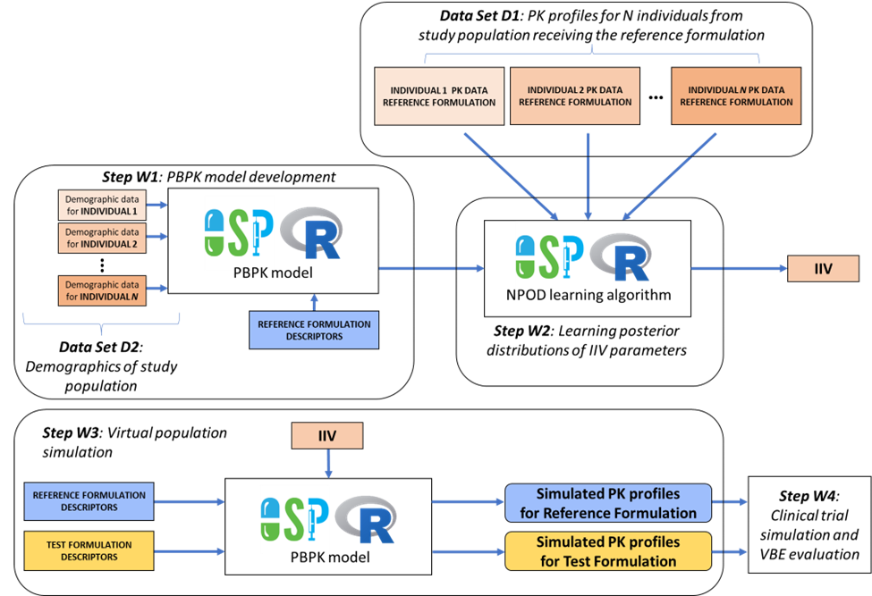

library(openVBE)
#> Loading required package: ospsuite
#> Loading required package: rSharp
#> Loading required package: mclust
#> Package 'mclust' version 6.1.1
#> Type 'citation("mclust")' for citing this R package in publications.
#> Warning: replacing previous import 'stats::filter' by 'dplyr::filter' when
#> loading 'openVBE'Ensuring comparable rate and extent at which an active ingredient reaches the site of action for the generic (test) formulation and the reference listed drug or reference standard is necessary to establish bioequivalence (BE) between these products. To overcome challenges related to study design , population selection, subject recruitment and data sparsity leading, ultimately, to decreased human testing, in silico approaches that involve virtual bioequivalence (VBE) assessment are increasingly considered by industry and regulatory agencies.
This article introduces an R package within the Open Systems Pharmacology framework to streamline VBE workflows.
Figure: Overview of VBE workflows

The package integrates in vitro and in vivo data to train pharmacokinetic models, accounting for inter-individual variability, and establishing in vitro to in vivo extrapolations (IVIVE). A nonparametric approach is adopted to address parameter non-identifiability. The trained model is subsequently applied to determine the appropriate study size with statistical power needed for demonstrating BE virtually.
This tutorial guides users through standardized steps to assess the VBE of two formulations, illustrated with two case studies developed in dedicated articles in this site.
These case studies thus highlight the essential considerations for model development, training, and extrapolation towards their application for a VBE assessment.